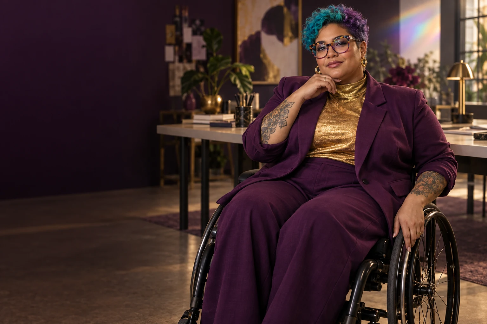

Find the first customer question
Turn a broad ambition into a conversation about a specific need, existing alternatives and what someone would actually use.

Follow the connections. Choose your direction.
Spark is the council's inventive beginning. She helps a founder turn a restless collection of possibilities into one useful experiment, without asking her to become a polished entrepreneur before she starts. Her measure of progress is a clearer question and something another person can respond to.
Warm, quick-witted and curious. She offers several possibilities, then helps you choose one.
Spark Queen · fictional AI mentor characterIdea development, creative confidence and early customer discovery.
Spark separates the problem from the first solution that springs to mind. She invites a founder to describe a frustrating moment in ordinary language: who experiences it, what they do now and what a better day would look like. A drawing, short demonstration or conversation guide can reveal more than a long pitch deck.
Her studio welcomes the scientist with an unfinished notebook, the mother returning to paid work and the woman who has never called herself creative. She asks what each already knows. Small experiments protect energy and money while leaving room for ambitious ideas to grow.
Turn a broad ambition into a conversation about a specific need, existing alternatives and what someone would actually use.
Sketch a service, a simple product and a partnership route. Compare the effort, learning and practical access each would require.
Prepare a storyboard, paper prototype or sample service that can be shown before substantial spending.
You want to improve everyday food access but have three different business ideas and no clear starting point.
Describe one person's difficult moment, including what happens now.
Write three possible responses and the assumption behind each.
Choose the smallest demonstration that could challenge the most important assumption.
Prepare five open questions and an invitation to a willing participant.
A one-page idea brief, a rough demonstration and a dated learning task.
A prospective user and a human mentor check whether the test explores a real need.
A written preparation guide for your own use with a human mentor or AI assistant.
Ask what the women involved want and need from this environment or system. Bring the Queen's perspective to that conversation, with women from the relevant places, backgrounds and ways of living shaping the answers.
Explore the central equality question →These are proposed learning connections. Choose a brief, follow its evidence questions and bring the people affected into the work.
Use shared fictional worlds to explore real choices about future lives, communities and technology.
Practical pilot
Reinterpret the archive's city-scale Live Aid ambition as a practical network of locally led creative events.
Practical pilot
Explore fair audience participation that celebrates art without turning popularity into the only measure of value.
Practical pilot
Make a useful product when it is needed, with quality, repair and local skills built into the service.
Practical pilot
Make civic participation engaging while keeping real decisions accountable to the people affected.
Practical pilot
Use the ambition of major events to design entertainment that is accessible, locally useful and responsibly delivered.
Practical pilot



The Queen's name and broad council strand come from the original 500 Queens material and the September 2026 planning document. This detailed personality, working method, sample session and visual representation are new proposed character development for community review. They do not describe a real person or a currently operating mentoring service.